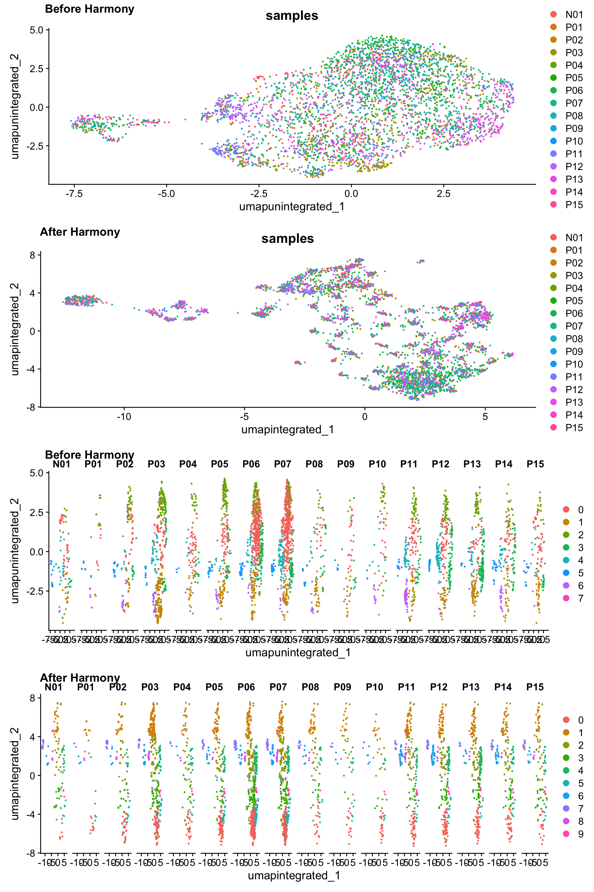
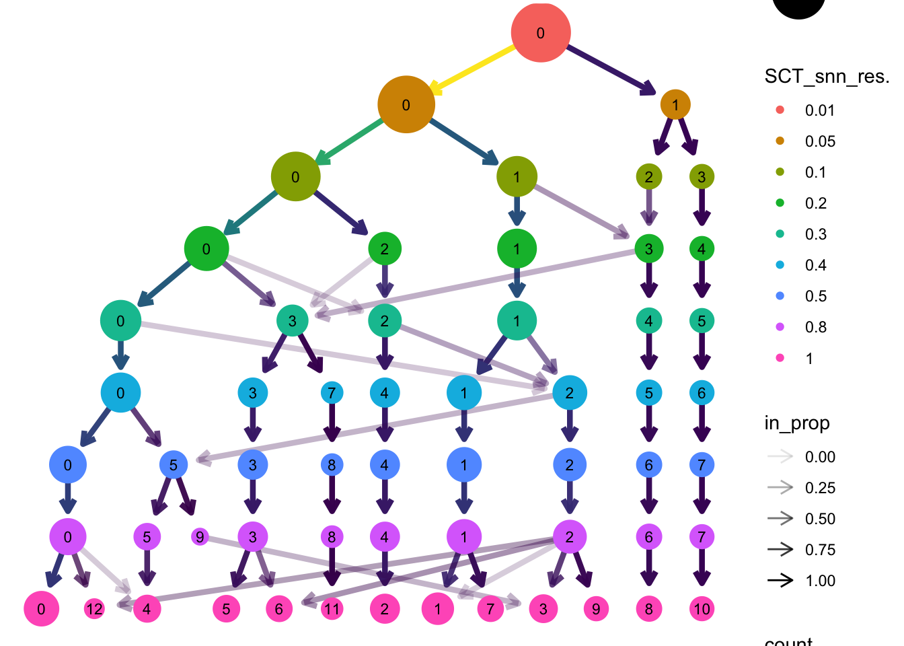

多个单细胞数据集整合分析（下）
参考：单细胞多数据集整合示例
上一节中我们完成了对GSE150430的分群注释，并提取了髓系细胞亚群，本节对髓系细胞进一步分群。
1 加载包
2 髓系细胞进一步归一化、整合、降维、分群
2.1 SCTransform、PCA
myeloid_seurat <- readRDS("output/sc_supplementary/GSE150430_myeloid_seurat.RDS")
# SCTranform
myeloid_seurat <- SCTransform(myeloid_seurat, verbose = FALSE)
myeloid_seuratAn object of class Seurat
39690 features across 3997 samples within 2 assays
Active assay: SCT (14970 features, 3000 variable features)
3 layers present: counts, data, scale.data
1 other assay present: RNA# Check which assays are stored in objects
myeloid_seurat@assays$RNA
Assay (v5) data with 24720 features for 3997 cells
First 10 features:
RP11-34P13.7, RP11-34P13.8, AL627309.1, AP006222.2, RP4-669L17.10,
RP4-669L17.2, RP5-857K21.4, RP11-206L10.3, RP11-206L10.5, RP11-206L10.2
Layers:
counts.N01, counts.P01, counts.P02, counts.P03, counts.P04, counts.P05,
counts.P06, counts.P07, counts.P08, counts.P09, counts.P10, counts.P11,
counts.P12, counts.P13, counts.P14, counts.P15
$SCT
SCTAssay data with 14970 features for 3997 cells, and 16 SCTModel(s)
Top 10 variable features:
IL1RN, CLEC10A, PKIB, HBEGF, MSR1, IER3, LGMN, CA2, CFD, GLUL # 查看目前默认的assay
DefaultAssay(myeloid_seurat)[1] "SCT"# 查看默认assay的layers
Layers(myeloid_seurat)[1] "counts" "data" "scale.data"# 执行PCA
myeloid_seurat <- RunPCA(myeloid_seurat)2.2 不进行整合时检查细胞分群情况：
# 查看降维信息
names(myeloid_seurat@reductions)[1] "pca"# Run UMAP
myeloid_seurat <- RunUMAP(myeloid_seurat,
dims = 1:40,
reduction = "pca",
reduction.name = "umap.unintegrated")
# 分群
# Determine the K-nearest neighbor graph
myeloid_seurat <- FindNeighbors(myeloid_seurat,
dims = 1:40,
reduction = "pca")
myeloid_seurat <- FindClusters(myeloid_seurat,
cluster.name = "unintegrated_clusters")Modularity Optimizer version 1.3.0 by Ludo Waltman and Nees Jan van Eck
Number of nodes: 3997
Number of edges: 211202
Running Louvain algorithm...
Maximum modularity in 10 random starts: 0.7202
Number of communities: 8
Elapsed time: 0 seconds# Plot UMAP
p1 <- DimPlot(myeloid_seurat,
reduction = "umap.unintegrated",
group.by = "samples")
p2 <- DimPlot(myeloid_seurat,
reduction = "umap.unintegrated",
split.by = "samples")
plot_grid(p1, p2,
ncol = 1, labels = "AUTO")2.3 整合
# 整合
myeloid_integrated <- IntegrateLayers(object = myeloid_seurat,
method = HarmonyIntegration,
verbose = FALSE)
# 整合后合并RNA layer
myeloid_integrated[["RNA"]] <- JoinLayers(myeloid_integrated[["RNA"]])
# 查看整合后的降维信息
names(myeloid_integrated@reductions)[1] "pca" "umap.unintegrated" "harmony" 2.4 整合后检验细胞分群情况
set.seed(123456)
# Run UMAP
myeloid_integrated <- RunUMAP(myeloid_integrated,
dims = 1:40,
reduction = "harmony", # 更改降维来源为整合后的"harmony"
reduction.name = "umap.integrated")
names(myeloid_integrated@reductions)[1] "pca" "umap.unintegrated" "harmony"
[4] "umap.integrated" # 分群
myeloid_integrated <- FindNeighbors(myeloid_integrated,
dims = 1:40,
reduction = "harmony") #更改降维来源为"harmony"
myeloid_integrated <- FindClusters(myeloid_integrated,
cluster.name = "integrated_clusters")Modularity Optimizer version 1.3.0 by Ludo Waltman and Nees Jan van Eck
Number of nodes: 3997
Number of edges: 290917
Running Louvain algorithm...
Maximum modularity in 10 random starts: 0.7795
Number of communities: 10
Elapsed time: 0 secondscolnames(myeloid_integrated@meta.data) [1] "orig.ident" "nCount_RNA" "nFeature_RNA"
[4] "samples" "log10GenesPerUMI" "mitoRatio"
[7] "cells" "S.Score" "G2M.Score"
[10] "Phase" "mitoFr" "groups"
[13] "old_clusters" "nCount_SCT" "nFeature_SCT"
[16] "unintegrated_clusters" "seurat_clusters" "integrated_clusters" # Plot UMAP
p3 <- DimPlot(myeloid_integrated,
reduction = "umap.integrated",
group.by = "samples")
p4 <- DimPlot(myeloid_integrated,
reduction = "umap.integrated",
split.by = "samples")
plot_grid(p1, p3, p2, p4,
ncol = 1,
labels = c("Before Harmony", "After Harmony",
"Before Harmony", "After Harmony"))
2.5 聚类
# Determine the clusters for various resolutions
myeloid_integrated <- FindClusters(myeloid_integrated,
resolution = c(0.01, 0.05, 0.1, 0.2, 0.3,
0.4, 0.5, 0.8, 1),
verbose = F)
# Explore resolutions
head(myeloid_integrated@meta.data, 5) orig.ident nCount_RNA nFeature_RNA samples
N01_AGCGTCGAGTGAAGAG.1 N01 2691.228 2086 N01
N01_GCAATCATCAGCCTAA.1 N01 2139.759 1566 N01
N01_CGTGTAATCCCACTTG.1 N01 2251.166 1803 N01
N01_AAACGGGCATTTCAGG.1 N01 1909.545 1226 N01
N01_AAAGATGCAATGTAAG.1 N01 1796.109 1360 N01
log10GenesPerUMI mitoRatio cells
N01_AGCGTCGAGTGAAGAG.1 0.9677441 0.010726702 N01_AGCGTCGAGTGAAGAG.1
N01_GCAATCATCAGCCTAA.1 0.9592918 0.018235699 N01_GCAATCATCAGCCTAA.1
N01_CGTGTAATCCCACTTG.1 0.9712410 0.017482940 N01_CGTGTAATCCCACTTG.1
N01_AAACGGGCATTTCAGG.1 0.9413461 0.011039803 N01_AAACGGGCATTTCAGG.1
N01_AAAGATGCAATGTAAG.1 0.9628822 0.006095955 N01_AAAGATGCAATGTAAG.1
S.Score G2M.Score Phase mitoFr groups
N01_AGCGTCGAGTGAAGAG.1 -0.093324147 -0.04497299 G1 Medium Normal
N01_GCAATCATCAGCCTAA.1 0.008569604 -0.03484456 S High Normal
N01_CGTGTAATCCCACTTG.1 -0.013729028 -0.05064395 G1 High Normal
N01_AAACGGGCATTTCAGG.1 -0.005136538 -0.03723796 G1 Medium Normal
N01_AAAGATGCAATGTAAG.1 -0.039476505 -0.04625311 G1 Low Normal
old_clusters nCount_SCT nFeature_SCT
N01_AGCGTCGAGTGAAGAG.1 Macrophages 2455 1929
N01_GCAATCATCAGCCTAA.1 Macrophages 2252 1505
N01_CGTGTAATCCCACTTG.1 Macrophages 2359 1712
N01_AAACGGGCATTTCAGG.1 Macrophages 2044 1197
N01_AAAGATGCAATGTAAG.1 Myeloid (unspecific) 2271 1322
unintegrated_clusters seurat_clusters
N01_AGCGTCGAGTGAAGAG.1 0 5
N01_GCAATCATCAGCCTAA.1 0 6
N01_CGTGTAATCCCACTTG.1 0 5
N01_AAACGGGCATTTCAGG.1 6 7
N01_AAAGATGCAATGTAAG.1 5 10
integrated_clusters SCT_snn_res.0.01 SCT_snn_res.0.05
N01_AGCGTCGAGTGAAGAG.1 3 0 0
N01_GCAATCATCAGCCTAA.1 3 0 0
N01_CGTGTAATCCCACTTG.1 3 0 0
N01_AAACGGGCATTTCAGG.1 1 0 0
N01_AAAGATGCAATGTAAG.1 7 0 1
SCT_snn_res.0.1 SCT_snn_res.0.2 SCT_snn_res.0.3
N01_AGCGTCGAGTGAAGAG.1 0 0 3
N01_GCAATCATCAGCCTAA.1 0 0 3
N01_CGTGTAATCCCACTTG.1 0 0 3
N01_AAACGGGCATTTCAGG.1 1 1 1
N01_AAAGATGCAATGTAAG.1 3 4 5
SCT_snn_res.0.4 SCT_snn_res.0.5 SCT_snn_res.0.8
N01_AGCGTCGAGTGAAGAG.1 3 3 3
N01_GCAATCATCAGCCTAA.1 3 3 3
N01_CGTGTAATCCCACTTG.1 3 3 3
N01_AAACGGGCATTTCAGG.1 1 1 1
N01_AAAGATGCAATGTAAG.1 6 7 7
SCT_snn_res.1
N01_AGCGTCGAGTGAAGAG.1 5
N01_GCAATCATCAGCCTAA.1 6
N01_CGTGTAATCCCACTTG.1 5
N01_AAACGGGCATTTCAGG.1 7
N01_AAAGATGCAATGTAAG.1 10# 查看各个分辨率下的细胞分群情况
select(myeloid_integrated@meta.data,
starts_with(match = "SCT_snn_res.")) %>%
lapply(levels)$SCT_snn_res.0.01
[1] "0"
$SCT_snn_res.0.05
[1] "0" "1"
$SCT_snn_res.0.1
[1] "0" "1" "2" "3"
$SCT_snn_res.0.2
[1] "0" "1" "2" "3" "4"
$SCT_snn_res.0.3
[1] "0" "1" "2" "3" "4" "5"
$SCT_snn_res.0.4
[1] "0" "1" "2" "3" "4" "5" "6" "7"
$SCT_snn_res.0.5
[1] "0" "1" "2" "3" "4" "5" "6" "7" "8"
$SCT_snn_res.0.8
[1] "0" "1" "2" "3" "4" "5" "6" "7" "8" "9"
$SCT_snn_res.1
[1] "0" "1" "2" "3" "4" "5" "6" "7" "8" "9" "10" "11" "12"绘制聚类树展示不同分辨率下的细胞分群情况及相互关系
tree <- clustree(myeloid_integrated@meta.data,
prefix = "SCT_snn_res.") # 指定包含聚类信息的列
tree
这里，选取分辨为0.8
Idents(myeloid_integrated) <- "SCT_snn_res.0.8"聚类可视化
# Plot the UMAP
DimPlot(myeloid_integrated,
reduction = "umap.integrated",
label = T)2.6 细胞分群质量评估
分析样本类型是否影响细胞分群
# 先简单查看不同cluster的细胞数
table(myeloid_integrated@active.ident)
0 1 2 3 4 5 6 7 8 9
891 737 642 419 406 280 229 191 127 75 # 查看不同样本类型中的细胞分群情况
DimPlot(myeloid_integrated,
reduction = "umap.integrated",
label = TRUE,
split.by = "groups") +
NoLegend()分析细胞周期是否影响细胞分群
# Explore whether clusters segregate by cell cycle phase
DimPlot(myeloid_integrated,
reduction = "umap.integrated",
label = TRUE,
split.by = "Phase") +
NoLegend()分析其他非期望变异来源是否会影响细胞分群
# Determine metrics to plot present in seurat_clustered@meta.data
metrics <- c("nCount_RNA", "nFeature_RNA", "S.Score", "G2M.Score", "mitoRatio")
FeaturePlot(myeloid_integrated,
reduction = "umap.integrated",
features = metrics,
pt.size = 0.4,
order = TRUE,
min.cutoff = 'q10',
label = TRUE)保存
saveRDS(myeloid_integrated,
file = "output/sc_supplementary/GSE150430_myeloid_clustered.RDS")2.7 亚群细胞注释
髓系亚群进一步细分的marker如下：
genes_to_check <- list(
Mac = c("CD14", "CD163", "APOE", "C1QA", "C1QB", "C1QC"),
pDC = c("LILRA4", "IL3RA", "TCF4", "TCL1A", "CLEC4C"),
DC1 = c("CLEC9A", "XCR1", "BATF3"),
DC2 = c("CD1A", "FCER1A", "CD1C", "CD1E", "CLEC10A"),
DC3 = c("CCR7", "LAMP3", "FSCN1", "CCL22", "BIRC3"),
Mono = c("VCVN", "FCN1", "S100A12", "S100A8", "S100A9", "FCGR3A")
)查看marker基因的表达：
DotPlot(myeloid_integrated,
features = genes_to_check) +
theme(axis.text.x = element_text(angle = 45, hjust = 1))手动注释：
myeloid_clustered <- RenameIdents(
myeloid_integrated,
"0" = "Macrophages",
"1" = "DC2",
"2" = "Unknown",
"3" = "Macrophages",
"4" = "Monocyte",
"5" = "Macrophages",
"6" = "Unknown",
"7" = "DC1",
"8" = "DC2",
"9" = "Macrophages"
)
table(Idents(myeloid_clustered))
Macrophages DC2 Unknown Monocyte DC1
1665 864 871 406 191 # Plot the UMAP
p1 <- DimPlot(
myeloid_clustered,
reduction = "umap.integrated",
label = T
)
p1在注释好的数据中再次检查marker基因的表达情况：
DotPlot(myeloid_clustered,
features = genes_to_check) +
theme(axis.text.x = element_text(angle = 45, hjust = 1)) 这里我们参考Seurat-对FeaturePlot的进一步修饰中的方法，可视化巨噬细胞marker基因的共表达情况：
p2 <- Plot_Density_Joint_Only(
myeloid_clustered,
features = c(
"CD14", "CD163", "APOE",
"C1QA", "C1QB", "C1QC"
),
reduction = "umap.integrated",
custom_palette = BlueAndRed()
)
p2plot_grid(
p1, p2,
labels = "AUTO"
)保存
saveRDS(myeloid_clustered,
file = "output/sc_supplementary/GSE150430_myeloid_clustered.RDS")3 整合三个数据集的髓系细胞
后面分别对GSE150825, GSE162025两个数据集进行同样的处理，即先大致分群，然后提取髓系细胞进一步分群，保存文件名为“GSE***_myeloid_clustered.RDS”的文件。最后读取三个数据集，整合重新降维分群，再继续分析。这里不再实际分析。
### 不运行 ###
# 读取三个数据集的髓系细胞
myeloid_clustered_1 <- readRDS("output/sc_supplementary/GSE150430_myeloid_clustered.RDS")
myeloid_clustered_2 <- readRDS("output/sc_supplementary/GSE150825_myeloid_clustered.RDS")
myeloid_clustered_3 <- readRDS("output/sc_supplementary/GSE162025_myeloid_clustered.RDS")
# 添加数据集标识便于识别
myeloid_clustered_1$GSE_num = "GSE150430"
myeloid_clustered_2$GSE_num = "GSE150825"
myeloid_clustered_3$GSE_num = "GSE162025"
# 合并三个数据集
myeloid_merged <- merge(
GSE150430,
list(GSE150825, GSE162025),
add.cell.ids = c('GSE150430','GSE150825','GSE162025')
)
table(myeloid_merged$GSE_num)
colnames(myeloid_merged@meta.data)
# 重新构建Seurat对象以便重新归一化、整合、降维等
sce <- CreateSeuratObject(
myeloid_merged@assays[["RNA"]],
meta.data = sce@meta.data
)
sce
table(sce$groups)